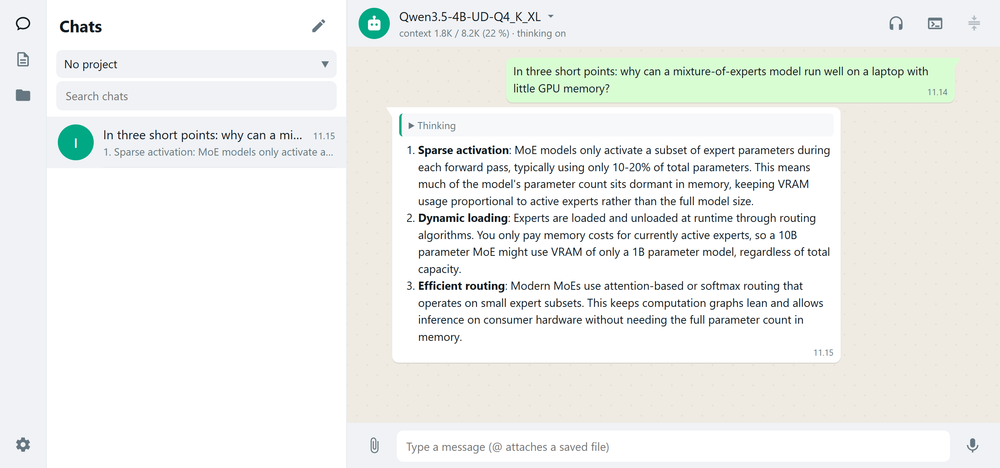

Run AI models on your own Intel PC.
inferzero is a free, open-source program that runs large language models (Qwen, Gemma 4, DeepSeek) on the graphics built into Intel's Core Ultra laptops and mini PCs, and on Arc graphics cards. Chat with them in your browser, connect your own tools to them, and turn speech into text, all on your computer.
The program is small; the models are downloaded separately, most of them 4 to 20 GB.

What you get
One program, started from a small launcher window. It downloads a model for you and opens a chat in your browser.
A chat in your browser
Ask questions, attach images, PDFs and documents, let the model search the web, or talk to it out loud and hear it answer. Also from your phone, through a password-protected link.
Big models on ordinary hardware
Mixture-of-experts models larger than your memory read their parts from the SSD as needed: a 35B model runs on a laptop with 32 GB of RAM.
Built for Intel graphics
Made only for Intel GPUs, from the ground up. On the same laptop and the same model files, prompts are read 2.7 to 7.4 times faster than with llama.cpp.
Works with your tools
Speaks the OpenAI, Anthropic and Ollama APIs, so most AI apps and editors can use it. One command connects the Pi coding agent.
Speech and documents
Transcripts of recordings and meetings (Me / Others), with summaries. PDFs and images read to text (OCR), tables kept as tables.
Private and checked
Everything runs on your computer. Every model is checked against an exact reference implementation, so you get the model's real quality, not a degraded copy.
What you need
An Intel GPU from the last few years. Nothing else to install: no Python, no compiler, no account.
- System
- Windows 11 (64-bit), or Linux (Ubuntu 24.04 or newer; other distributions work too).
- Intel graphics
- A laptop, mini PC or desktop with Core Ultra and Arc graphics (Meteor Lake, Lunar Lake, Arrow Lake H, Panther Lake), or an Arc graphics card: A-series (A770, A750, A580) or B-series (B580, Pro B50, Pro B60, Pro B65, Pro B70); it has also run on Intel's Data Center GPU Max. One model can also be split over several cards.
- Memory
- 16 GB of RAM for the small models (Qwen3.5 4B and 9B, Gemma 4 E4B); 32 GB for the 12B to 35B ones and Qwen3.8 Flash Next. A graphics card's own memory counts too.
- Disk
- 4 to 20 GB per model (Flash Next, the largest: about 85 GB); an SSD for the mixture-of-experts models.
- Driver
- Intel's graphics driver on Windows; on Linux, Intel's compute runtime and Level Zero loader.
Install and uninstall
Installing takes about five minutes, plus the model's download. Nothing is installed into Windows itself: removing inferzero is deleting its folders.
Install
Windows
- Download
inferzero-…-win64.zipfrom the latest release and unpack it anywhere. - Double-click
zero-launcher.cmd. (Windows may ask once: "More info", then "Run anyway".) - Pick a model (the one that suits your RAM is ticked) and press Download and start. The chat opens in your browser.
Linux
- Download
inferzero-…-linux-x64.tar.gzfrom the latest release and unpack it. - Run
./zero-launcher.sh: a menu in the terminal. - Pick a model; it downloads it and starts the server. Open the address it shows in your browser.
Uninstall cleanly
Windows
- Stop the server: Stop server in the launcher (or the tray icon's Stop the server), then close the launcher.
- Delete the folder you unpacked.
- Delete
%USERPROFILE%\.inferzero: your chats, recordings and transcripts, logs, settings and inferzero's own model files. Copy out anything you want to keep first. - Delete the models from
%USERPROFILE%\.cache\huggingface\hub: themodels--…folders it downloaded. Other AI programs share this folder, so keep the ones they use.
Only if you used setup.cmd: remove the folder from your Path (Settings › System › About › Advanced system settings › Environment Variables), and if you connected Pi, delete zero-pi.cmd and zero-server.cmd from %USERPROFILE%\.pi\agent\bin and the "inferzero" entry from %USERPROFILE%\.pi\agent\models.json.
Linux
- Stop the server (Ctrl+C in the launcher's terminal).
- Delete the folder you unpacked.
- Delete
~/.inferzero: chats, recordings, logs, settings and inferzero's own model files. - Delete the models from
~/.cache/huggingface/hub(or$HF_HOME/hub): themodels--…folders it downloaded, keeping those other programs use.
Only if you installed the service (--install-service): systemctl --user disable --now inferzero, then delete ~/.config/systemd/user/inferzero.service.
From your own apps
While it runs, the server answers at http://127.0.0.1:8090 like the OpenAI API:
curl http://127.0.0.1:8090/v1/chat/completions \
-H "Content-Type: application/json" \
-d '{"messages": [{"role": "user", "content": "Hello!"}]}'
Step by step, with every option: the usage guide. Building from source: install and build.
How fast
The same model (Qwen3.8 27B) on each kind of hardware, measured by the people who own it. Tokens per second: higher is faster; a word is about 1.3 tokens.
| Hardware | Reading a prompt | Writing an answer |
|---|---|---|
| Core Ultra 5 125H laptop (where it started) | 135 | 5.1 (12.9 with drafting) |
| Core Ultra 9 285H mini PC (Arc 140T) | 405 | 6.1 (14.6 with drafting) |
| Core Ultra 7 258V (Arc 140V) | 444 | 6.5 (13.9 with drafting) |
| Core Ultra X7 358H mini PC (Arc B390) | 637 | 5.9 (16.8 with drafting) |
| Arc A770 16 GB | 1,528 | 22.9 (48.6 with drafting) |
| Arc Pro B60 | 1,957 | 24.1 (54.3 with drafting) |
| Arc Pro B65 | 1,735 | 21.6 (51.8 with drafting) |
| Arc B580 12 GB | 1,877 | 13.7 (the model does not fit: the CPU computes the part kept in RAM) |
| Arc Pro B70 | 3,135 | 35.2 (70.6 with drafting) |
| Intel Data Center GPU Max 1550 (one of its two stacks) | 2,648 | 27.8 |
| 4 × Arc Pro B60, one model split | 2,195 | 53 (a release of 2026-10-31; slower in the current one, being fixed) |
Prompts of 4,000 tokens (8,000 on the 125H). Smaller models are several times faster: the Qwen3.5 4B reads 7,900 tokens a second on an Arc B580.
Free and open source
inferzero costs nothing and never will. Its source code is public under the Apache 2.0 license: use it, change it, share it, at home or at work.
- No account, no subscription, no ads, no telemetry.
- Your conversations stay on your computer. It goes online only to download models, to check for a new release (the launcher; you can turn it off), and to search the web when you turn that on.
- Built in the open, and still far from what Intel's chips can do. You can help: run one benchmark on your hardware and share it, report a problem, or improve the code.